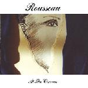

Home Artist links Label link

Rousseau - At The Cinema
| Artist: | Rousseau |
| Title: | At The Cinema |
| Label: | Musea FGBG 4436 |
| Length(s): | 47 minutes |
| Year(s) of release: | 2002 |
| Month of review: | [01/2003] |
Line up
Joerg Schwarz - guitars, vocals
Rainer Hofmann - piano, keyboards
Dieter Beermann - bass
Ali Pfeffer - drums, percussion
Tracks
| 1) | Welcome To The Cinema | 0.55
|
| 2) | Now Or Never | 3.10
|
| 3) | Rendez-vous | 5.05
|
| 4) | All I Want | 3.34
|
| 5) | Waterfront | 3.21
|
| 6) | If This Is Heaven | 5.10
|
| 7) | Retreat | 2.56
|
| 8) | Back In These Arms | 4.06
|
| 9) | Seattle | 3.16
|
| 10) | Short Cut To Somewhere | 1.46
|
| 11) | Halland | 3.21
|
| 12) | Through | 2.42
|
| 13) | Amour Fou | 3.26
|
| 14) | At The Cinema | 4.25
|
Summary
Rousseau isn't exactly the most productive of bands: despite existing since the mid eighties, this is only their fourth album.
The music
This album contains mostly shorter progressive tracks, with poppy influences. Schwarz' raspy vocals fit the music nicely at times, but fail at others. Pfeffer's percussive actions tend to sound plodding, making me want to check whether they were made by man or machine. The album contains both instrumental tracks, such as Rendez-vous, Seattle or Retreat, all rather uninteresting, but also Amour Fou, and assorted vocal tracks. Now Or Never is a pretty nice strong track with dynamic vocals. On the other hand, tracks such as All I Want and If This Is Heaven aren't all that interesting, let alone Back In These Arms. To top it off, the sound of the recordings is a tad on the flat side, especially on the percussion.
Conclusion
Despite the many years of experience Rousseau have, I can't help but find that this album falls short both in song writing and the flat playing, aside from poor sound quality. It does have its moments, in Now Or Never and Amour Fou, but they remain sparse. Not an album I would recommend.
© Roberto Lambooy